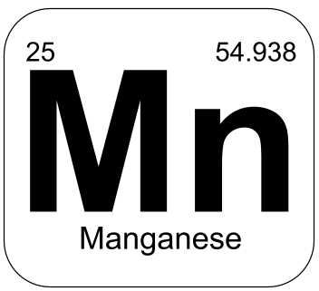

Manganese is a steel-gray, hard, brittle substance that is most often used in alloys to strengthen substances.
Manganese was first discovered by Swedish mineralogist Johann Gottlieb Gahn in 1774. In the mid-1700s chemists suspected that an ore named pyrolusite contained a new element, but they were unable to separate the new element until Johann. Its late discovery can be attributed to its similarities to iron making it harder to differentiate.
Manganese has a few main uses, those being mainly in creating alloys. Manganese is used in alloys to strengthen, improve corrosion resistance, and help mechanical properties of metals, it's often used in steel, aluminum, and magnesium alloys. Its also used for glassmaking because it can counteract a green color created by impurities, fertilizer & livestock feed additive because it improves the health of plants and livestock, and textile printing because manganese salts can be used as a reagent.